The pitch
Faultfinder is a detective game in which the crime scene is a program. You are given a dead engineer's listing in a fourteen-rune assembly language, the machine it ran on, and a complete recording of everything that machine did on the night she died.
You never write a line of code. Nothing you do changes the program. Every tool is read-only: you step the recording, drop breakpoints into it, rewind it, and watch the registers and memory change as it runs. It is a game about reading a program the way a detective reads a room.
Naming the faulty line is not enough. You also have to say what kind of mistake it was, and point at the exact step where the harm first shows in the machine's own record. The game checks all three, and a seal that does not hold is handed back.
Features
- Read-only by design. The moment you can edit the program it stops being an investigation and becomes a puzzle box. Even the tool that re-runs the tape against readings the machine never saw is marked off the record, so it cannot corrupt what you are proving.
- A real machine, fully observable. Fourteen instructions, six registers, a memory grid and memory-mapped ports with settling time. The whole trace exists the moment you open a case, so you can form a theory and jump straight to the step that proves it.
- Six classes of fault, each with a mechanical definition the generator can seed and prove: off-by-one boundary, uninitialised register, wrong branch polarity, overwritten value, unit mismatch, missing bounds check.
- Her handwriting is the documentation. Every note in the margin is the dead engineer's, and her annotations thin across the game as she stops writing them. Return to a tape you have read before and her hand has changed.
- Every case has exactly one answer, and that is a proof rather than a promise. Cases are generated and then verified: a case ships only if its fault is unique and defensible.
Demo reception
The demo has been played publicly since 10 September, through Steam's first Programming Fest and a run of open playtests. The interface was rebuilt in late September in response to players who found it overwhelming, and a two-track guide added for people who have never used a debugger.
Trailer
52 seconds · 1920×1080 · download MP4
Screenshots
Click any image for the full 1920×1080 version.

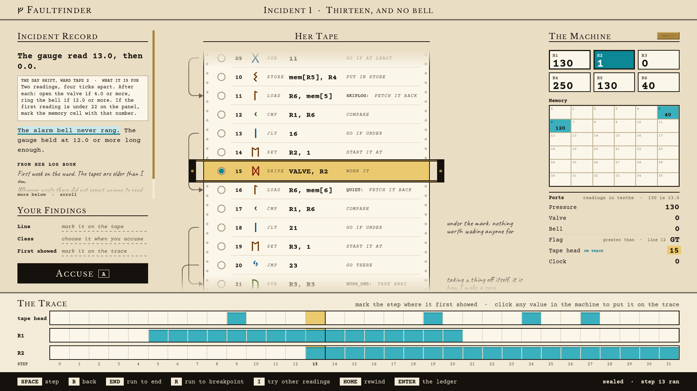

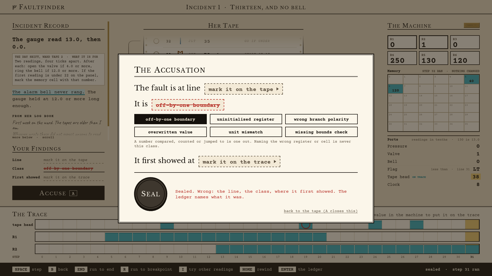

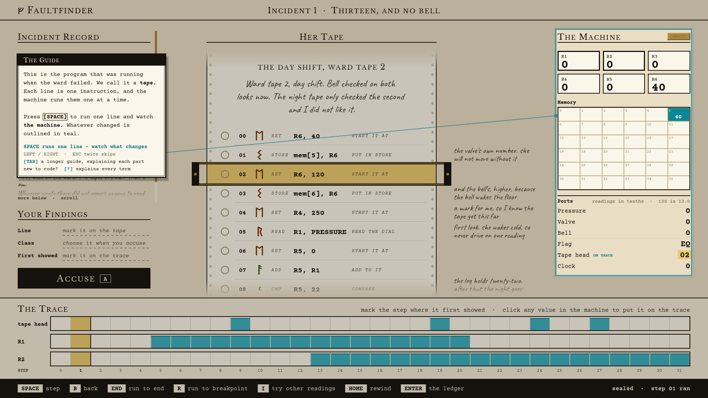

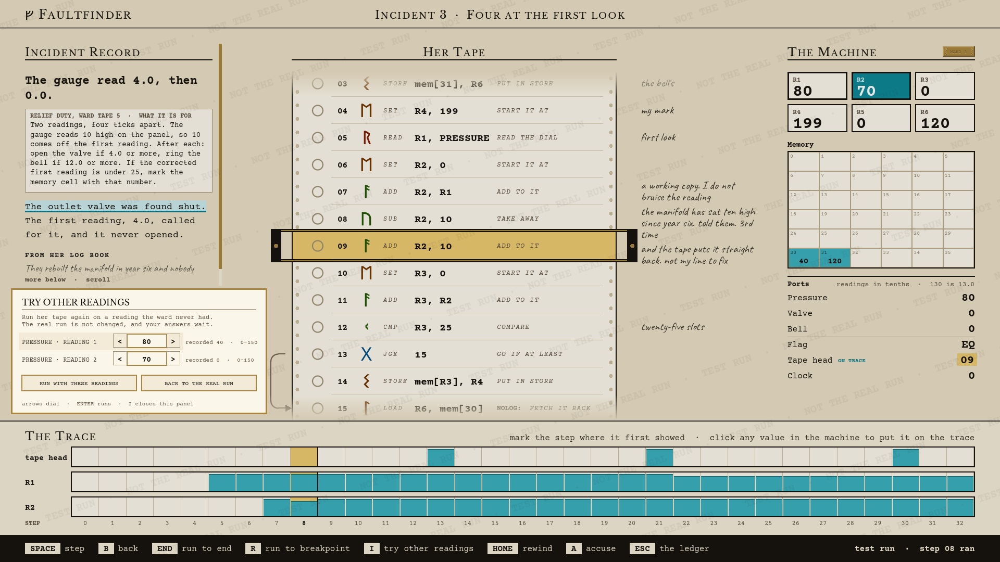

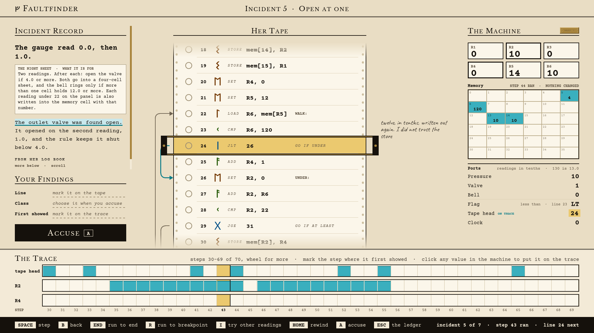

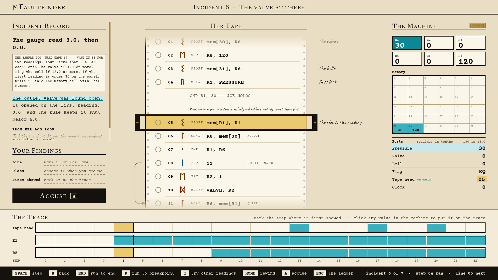

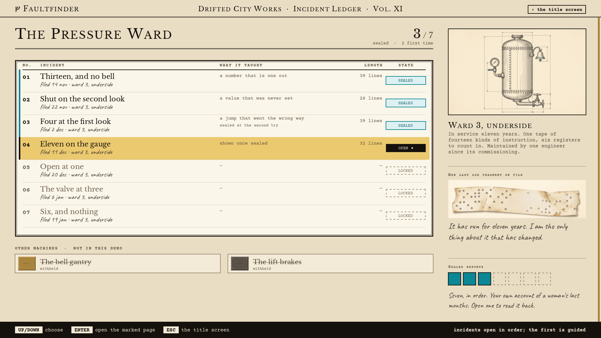

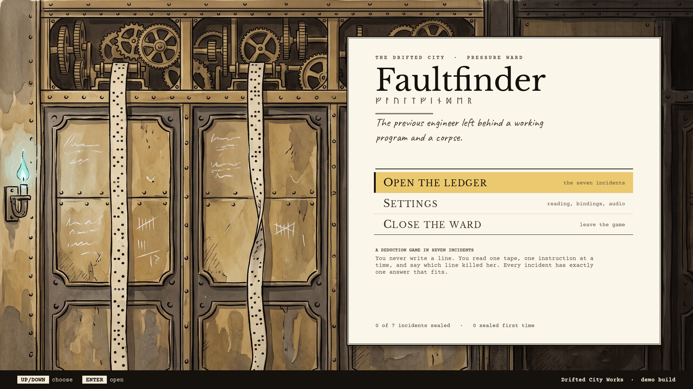
Key art and logo

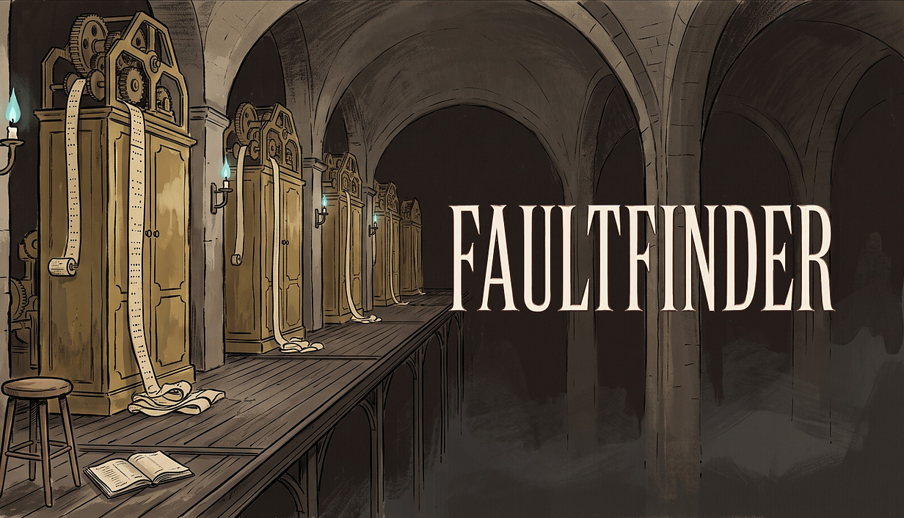


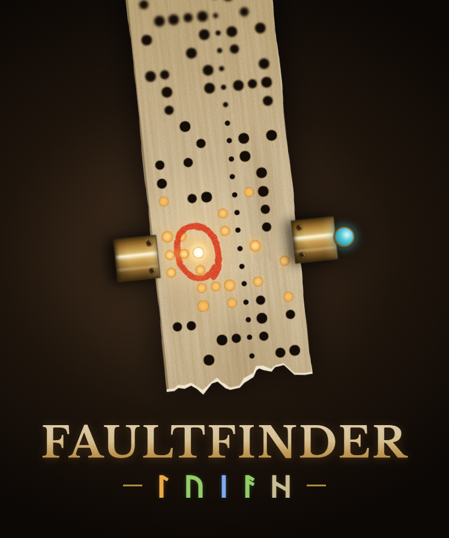

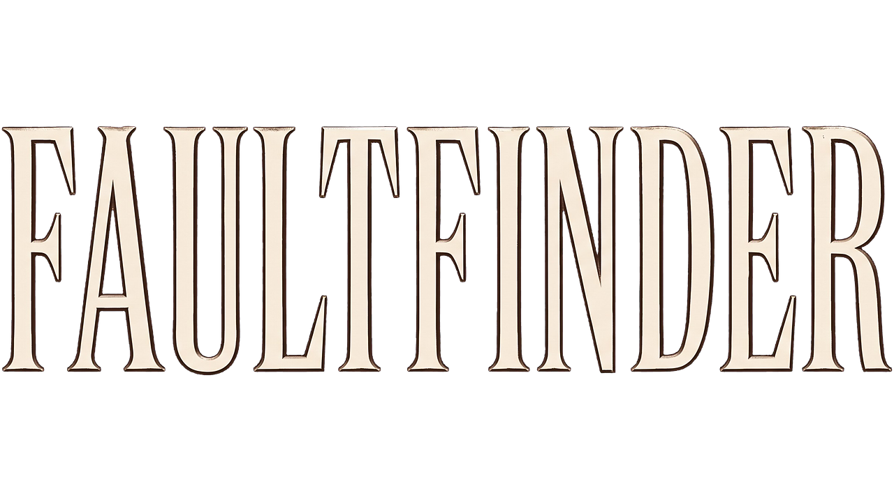

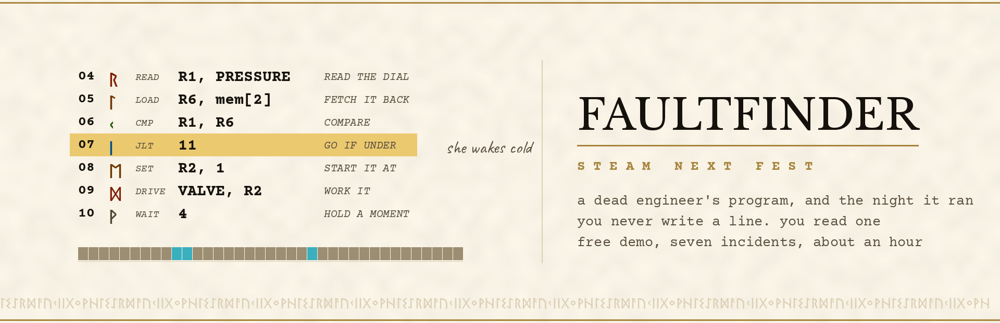
Animated assets
Looping GIFs for embeds and articles. All 616px wide.
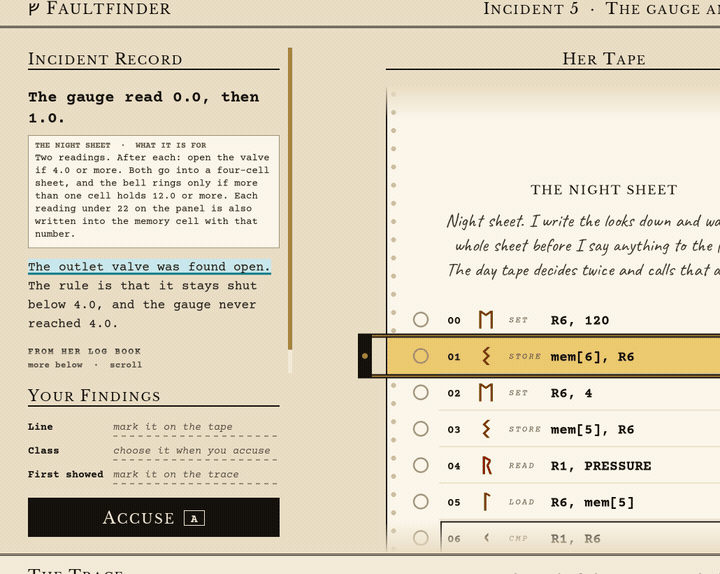
The listing, and her plain-words note beside each instruction.
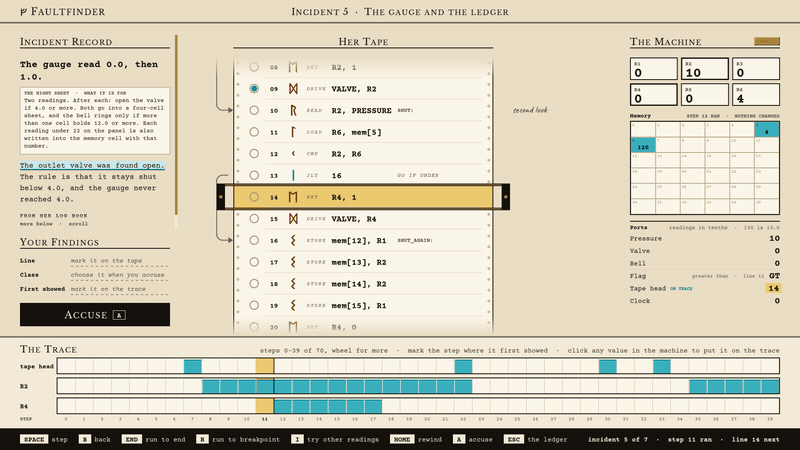
Mark a line, run, and the tape stops dead on it.
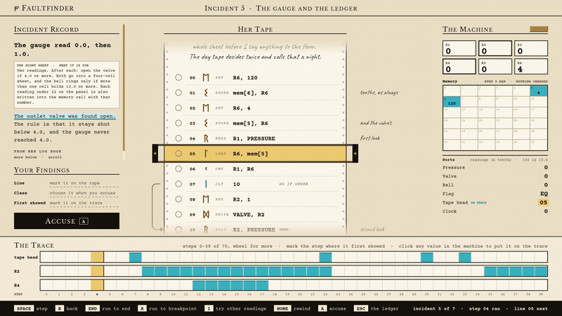
The trace runs forward, then rewinds. Nothing you do changes the program.
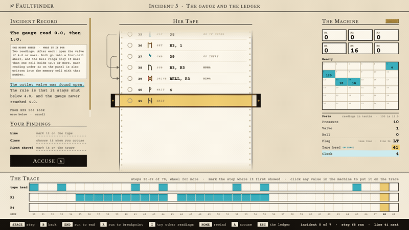
Scrubbing back through the recording.
About Endpaper
Endpaper is a one-person studio in Somerset, UK. Faultfinder comes out of twenty-six years that began writing C for the network processors in backbone routers, where most of the work was reading a listing and watching registers until you found the one instruction that was not doing what everybody believed it was doing. Nobody had made the detective game about that job, so this is it.
The studio's first release, The Infinite Library, launches on 10 November 2026. Both games are built in Godot and developed in the open, with playtests run publicly since September 2026.